슬롭을 금으로: 결국 신뢰의 문제예요
발표자 Lauren Tan(무대 이름 poteto)은 지난달 혼자서 PR 3,000개를 프로덕션에 내보냈다고 말하며 시작해요. 슬라이드 막대를 보면 3월 68개였던 게 7월 1,113개, 8월 2,401개를 거쳐 10월 3,127개까지 늘어요. 왼쪽 위에는 누적 10,732개라고 적혀 있어요.
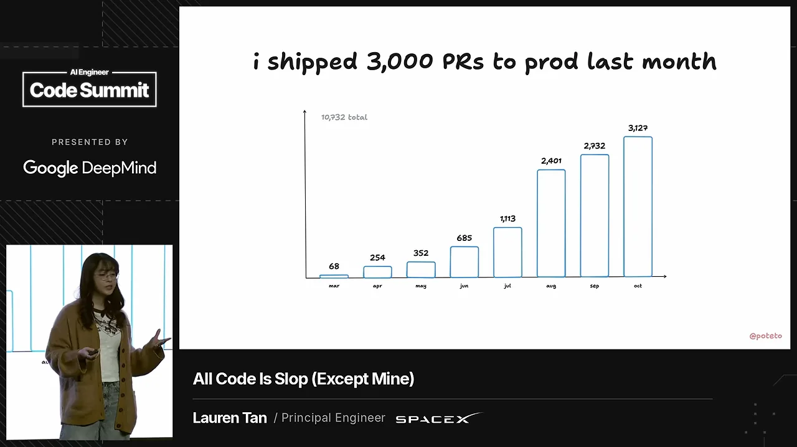
예전에는 코드의 '양'을 따지지 않았어요. 예외는 주말 동안 Google Maps를 통째로 다시 썼다는 Bret Taylor 같은 '코딩 머신'뿐이었죠. 이제는 에이전트 덕분에 누구나 코딩 머신이 될 수 있어요. 그래서 발표자는 엔지니어의 새 일을 이렇게 정의해요. 생산성을 크게 늘리면서도 코드 품질을 지키거나, 오히려 높이는 거예요.
이걸 '소프트웨어 공장'이라고 부르는 사람도 있어요. 발표자는 더 단순하게 '신뢰'의 문제로 봐요. 맹목적으로 믿는 게 아니에요. 에이전트가 옳은 일을 할 거라고 믿을 수 있도록 에이전트의 환경에 투자하는 거예요. 아래 곡선은 에이전트 수가 1개에서 수십, 수백, 수천 개로 늘수록 신뢰도 따라 올라가야 한다는 걸 보여 줘요.
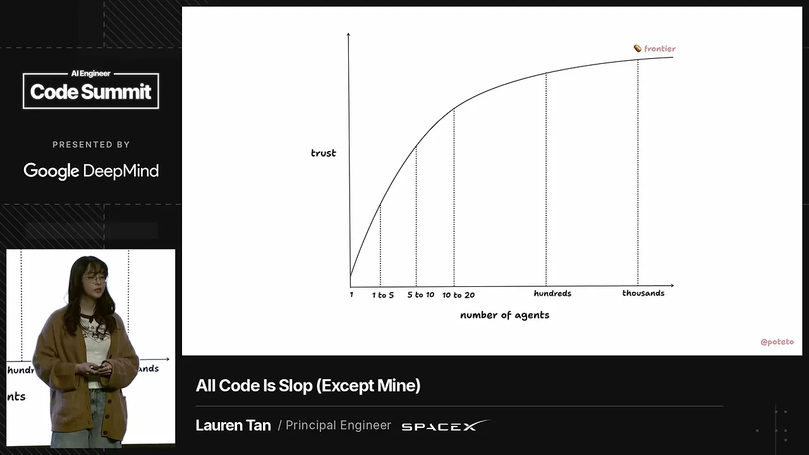
목표는 두 루프 사이를 건너는 거예요. 왼쪽은 에이전트가 슬롭 코드를 쓰고 사람이 검증하는 낮은 신뢰 루프예요. 슬라이드는 '대부분 여기 갇혀 있다'고 적었어요. 오른쪽은 에이전트가 좋은 코드를 쓰고 에이전트가 검증하는 높은 신뢰 루프예요.
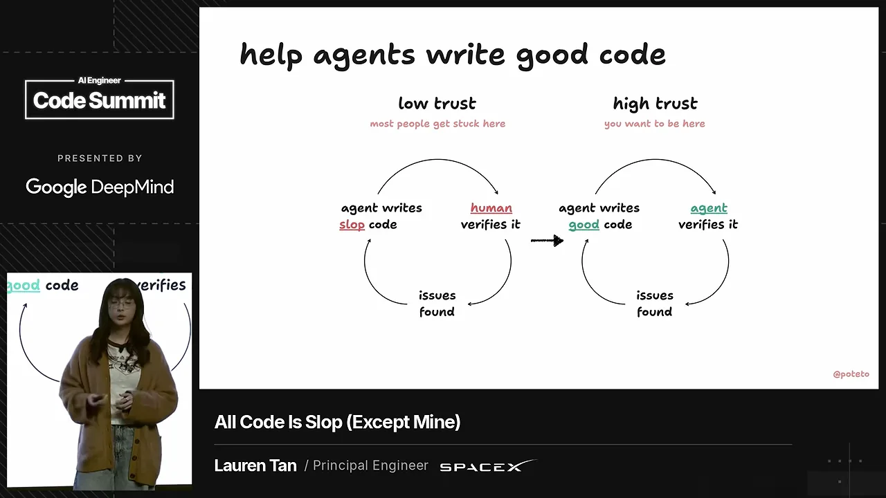
신뢰 피라미드와 정원 같은 코드베이스
어디에 시간을 써야 하는지 발표자는 '포테토 피라미드'라는 역삼각형으로 정리해요. 맨 위 코드베이스부터 정적 분석, 검증, 글(prose), 사람 리뷰 순이에요. 왼쪽 화살표는 아래로 갈수록 비용(cost)이 커진다는 뜻이에요.
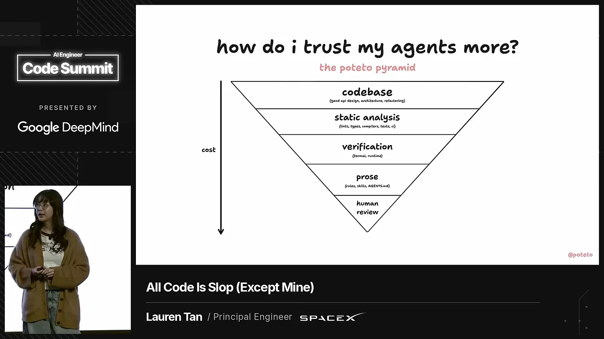
| 층 | 슬라이드에 적힌 예 | 하는 일 |
|---|---|---|
| 코드베이스 | 좋은 API 설계, 아키텍처, 리팩터링 | 에이전트가 기본으로 옳은 일을 하도록 강제해요 |
| 정적 분석 | 린트, 타입, 컴파일러, 테스트, CI(Continuous Integration) | 위와 함께 에이전트가 할 수 있는 일을 좁혀요 |
| 검증 | 형식 검증, 런타임 검증 | 버그와 불변식을 확인하고, 에이전트가 의도를 이해했는지 봐요 |
| 글 | 규칙, 스킬, AGENTS.md | 판단이 필요한 것만 조금 얹어요 |
| 사람 리뷰 | — | 마지막에 남는 것 |
위 두 층은 결정론적이에요. 같은 코드에는 늘 같은 결과가 나와요. 에이전트는 입력을 보고 출력을 만들고, 가장 큰 입력이 바로 코드베이스예요. 그래서 발표자는 에이전트를 고칠 때마다 규칙 파일에 한 줄을 더하기 전에 묻자고 해요. 이걸 결정론적 검사로 만들 수 없을까? 코드에 들어 있으면 재현할 수 있고, 그래서 더 믿을 수 있어요.
코드베이스는 정원이에요
2024년에는 출근해서 동료가 쓴 PR 세 개를 리뷰했어요. 지금은 300개쯤 돼요. 엔지니어 한 명이 에이전트 수백, 수천 개의 팀이 됐고, 코드가 끊임없이 흘러들어서 살아 있는 것처럼 자라요. 발표자는 이 상태를 숲처럼 덮인 건물 그림으로 보여 주며 '유기적 아키텍처'라고 불러요.
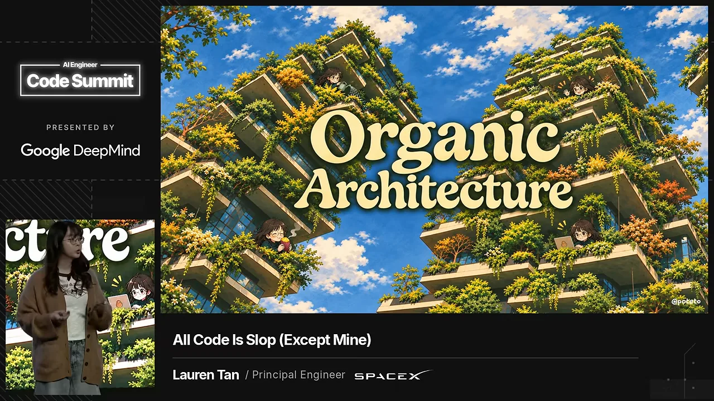
반대 방향도 똑같이 퍼져요. 우회 코드, 안티패턴, 폐기된 코드, 기술 부채가 하나라도 있으면 다음 에이전트는 그걸 '이 코드베이스의 패턴'으로 보고 베껴요. 아래 슬라이드에서 왼쪽 잡초 하나(one workaround)가 뿌리로 이어져 오른쪽에서는 잡초 무리(the pattern)가 돼요.
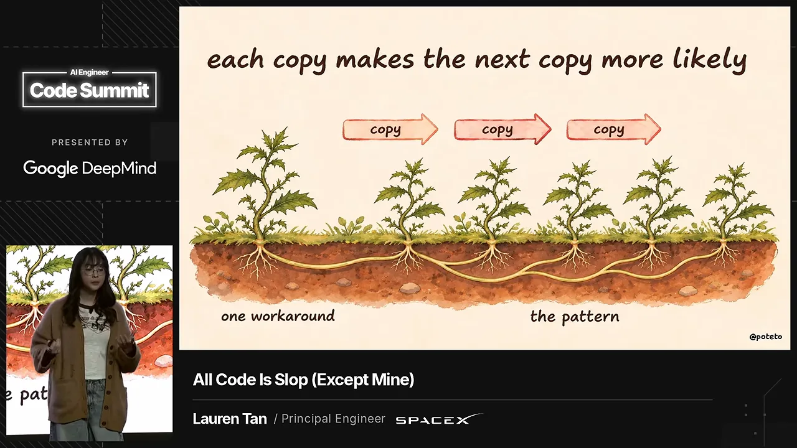
Dune: 금지 규칙과 폴더로 구조를 강제해요
Dune은 Grok Bot 팀이 유기적 아키텍처를 실제로 구현하려고 만든 클라이언트 프레임워크예요. 발표자 말로는 기술적으로 특별할 건 없고, 'Electron 앱용 Next.js' 정도로 생각하면 돼요. 흥미로운 건 데스크톱 앱을 만들며 배운 교훈을 제약과 린트 규칙으로 박아 넣었다는 점이에요.
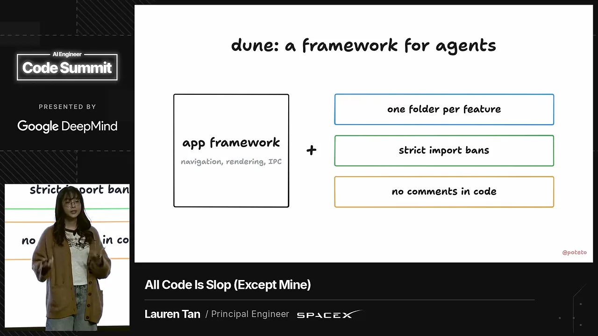
미묘하게 써야 하는 건 아예 막아요
첫 교훈은 슬라이드 제목 그대로 '미묘함은 슬롭으로 이어진다'예요. 대표 예는 React의 useEffect예요. 쓸 곳은 있지만 자주 잘못 쓰여서, 제대로 쓰려면 박사 학위가 필요하다는 농담까지 있어요. 에이전트도 잘 못 써요. 그래서 제품 코드에서는 아예 금지하고, Dune API 안의 정해진 몇 곳에서만 허용했어요.
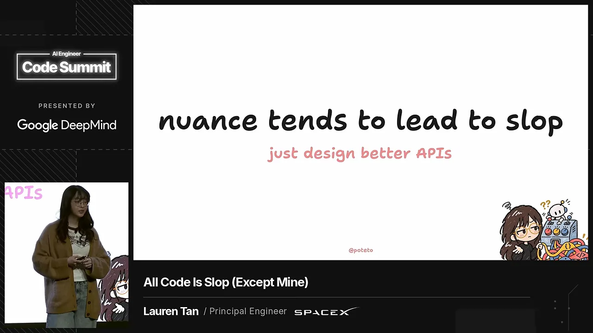
디렉터리 구조도 컨텍스트예요
Cursor도 Electron 앱인데, 거기서는 에이전트가 메인 프로세스 코드를 렌더러 프로세스 쪽으로 import하는 일이 잦았어요. 그러면 긴 작업이 생기고 화면이 버벅여요. 그래서 Dune 앱은 최상위에 electron-renderer/와 electron-main/ 두 폴더를 두고, 둘 사이 import를 의존성 그래프 분석기와 린트 규칙으로 막아요.
아래 슬라이드 위쪽을 보면 renderer의 features/와 main 사이에 X 표시와 함께 'not even types'라고 적혀 있어요. 타입조차 넘나들 수 없다는 뜻이에요. 공유가 필요한 타입은 가운데 shared/로만 오가요. 아래쪽은 발표자의 개인 프로젝트 tibo.dog예요. src/sim/tick.hot.ts라는 경로 자체가 '매 틱마다 실행되고(runs every tick), 메모리 할당 금지(no allocations)'라는 맥락을 전해요.
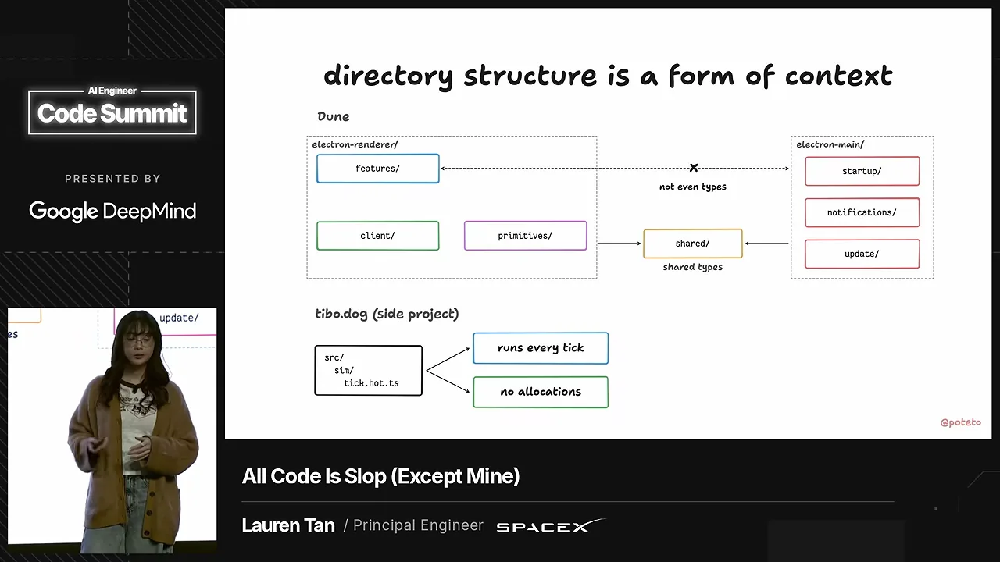
주석 대신 린트 규칙
발표자가 놀랐던 건 에이전트가 마크다운을 쓰는 방식이에요. 문서, 코드 주석, 규칙, 스킬을 '옳은 일을 안 한 이유'를 적어 두는 곳으로 써요. 반대로 작은 교정 하나를 다시는 깨면 안 되는 절대 규칙처럼 과하게 받아들이기도 해요. 슬라이드 그림에서 에이전트는 'I made it up'(지어냈어요)이라고 말하고, 발표자는 'Source?'(출처는?)라고 되물어요.
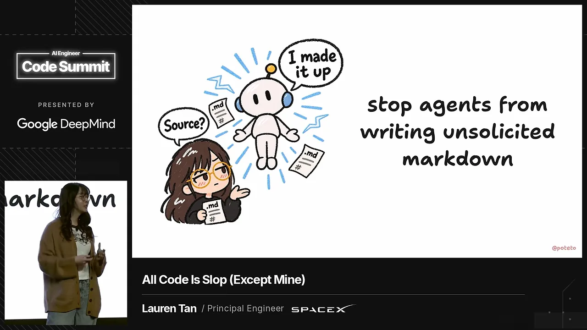
땜질 하나가 타이머 183개가 되기까지
Cursor에서 있었던 일이에요. 에이전트는 setTimeout, requestAnimationFrame, requestIdleCallback 같은 명령형 타이머를 빠른 땜질로 즐겨 썼어요. 사실은 VS Code의 명령형 스타일과 React의 선언형 스타일이 부딪히는 아키텍처 문제를 덮은 거였어요. 그 아키텍처 선택 때문에 앱 성능도, 에이전트 성능도 나빠졌다고 발표자는 말해요.
슬라이드는 이 과정을 날짜로 보여 줘요. 9월 9일, '나중에 다시 생기면 해제'라는 주석과 함께 setTimeout 하나가 깜빡임을 고쳤어요. 에이전트는 제대로 고치면 '더 큰 변경이 될 것'이라고 했죠. 10월 3일에는 이 코드가 공유 모듈로 복사됐고, 10월 17일에는 타이머가 183개가 됐어요.

타이머가 빠르게 생겼다 사라지면 메이저 가비지 컬렉션이 자주 일어나서 앱이 버벅여요. 발표자는 무엇보다 나빴던 점으로, 에이전트가 이 땜질이 정당하다는 주석을 잔뜩 남긴 걸 꼽아요.
주석은 99% 금지해요
그래서 Grok Bot에서는 주석의 99%를 금지했어요. 이유는 넷이에요. 주석은 금방 낡아요. 사람은 어차피 잘 안 읽어요. 에이전트에게 '어려워서 안 했다'는 탈출구를 줘요. 그리고 가장 큰 문제로, 주석은 강제할 수 없어요. '다음 에이전트에게 하지 말라고 적어 두자'는 좋은 뜻도 믿을 수 있는 장치가 되지 못해요. 아래 막대를 보면 코드 주석이 7월 31일 65,824개에서 오늘 1,227개로 줄었어요.
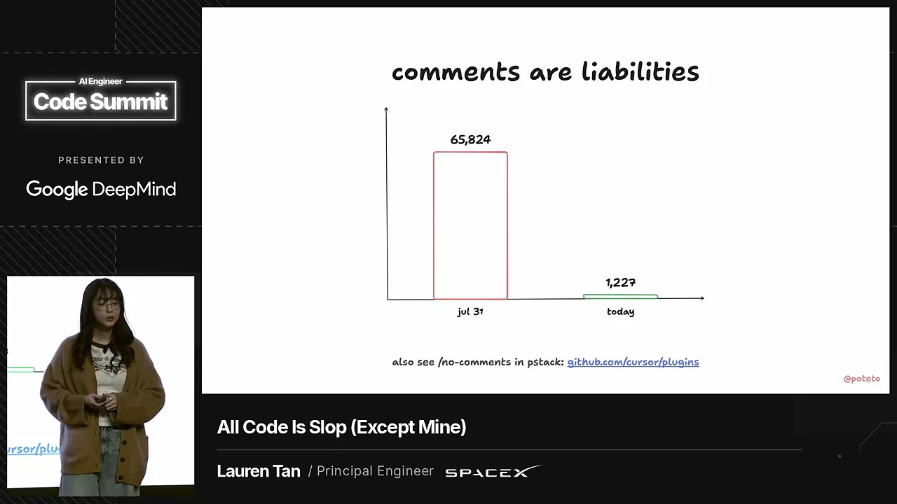
주석 대신 린트 규칙을 둬요. 규칙이 걸리면 땜질하지 말고 근본 원인을 고치라고 알려 주는, 친절한 오류 메시지를 띄워요. 이 장의 사례를 정리하면 아래처럼 돼요. 왼쪽이 에이전트를 고쳐야 했던 일, 오른쪽이 그걸 결정론적으로 막은 방법이에요.
일반 원칙은 이거예요. 에이전트를 고칠 때마다 결정론적 검사를 하나 만들거나, 더 나은 API 설계와 아키텍처로 문제를 종류째 없애요. 계단 그래프는 그렇게 쌓인 규칙 수예요. 7월 1일 이후 7개, 17개, 38개, 90개, 139개를 거쳐 11월 초 167개가 됐어요.
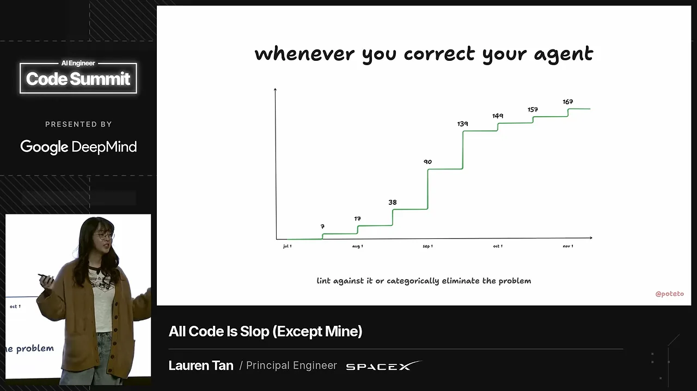
검증: 에이전트가 스스로 확인하게
피라미드 셋째 층인 검증은 에이전트를 더 자율적으로 만들고, 그 결과물에 대한 믿음을 높이는 큰 축이에요. 발표자의 코드 리뷰는 이제 '검증 결과물'을 보는 일로 줄었어요. 영상, 스크린샷, 다이어그램, 형식 검증 결과 같은 것들이에요.
런타임 검증: 앱을 직접 돌려 보게 해요
가장 기본은 런타임 검증이에요. 에이전트가 코드를 직접 실행하고, Chrome DevTools 프로토콜처럼 사람 개발자가 쓰는 디버깅 도구를 쓰게 하는 거예요. 아래 슬라이드 왼쪽이 검증 스킬에 들어 있는 피처 맵이에요. '어떤 기능이 있는지 → 사용자가 어떻게 닿는지 → 무엇이 동작을 증명하는지'를 가지처럼 그렸어요. 덕분에 "왼쪽 사이드바 그거"라고 말해도 에이전트가 추측할 필요가 없어요. 사람과 에이전트가 같은 어휘를 쓰게 되는 거죠.
오른쪽은 실제 앱을 조작하는 전용 CLI(Command-Line Interface)예요. app aria-click --accessible-name "Settings", app snapshot, app screenshot proof.png처럼 쓰여 있어요. 스킬 안에서 이 CLI와 드라이버를 매번 재사용하니 토큰이 줄고, CLI 자체도 테스트할 수 있어요.

형식 검증과 UI 속성 기반 테스트
최근에는 형식 검증도 쓰기 시작했어요. TLA(Temporal Logic of Actions)+로는 여러 기기와 플랫폼에 걸친 알림 같은 주요 사용자 흐름을 모델 체킹해요. Lean으로는 일부 알고리즘을 증명해요. 예를 들어 팀이 직접 만든 가상화 라이브러리에서 화면이 깜빡이거나 떨리지 않는다는 걸 Lean으로 확인해요. 슬라이드는 둘을 이렇게 나눠요. TLA+ 모델은 상태 기계를 모델링해서 모든 상태가 제대로 처리되는지 보고, Lean 증명은 구현의 버그를 찾아요.
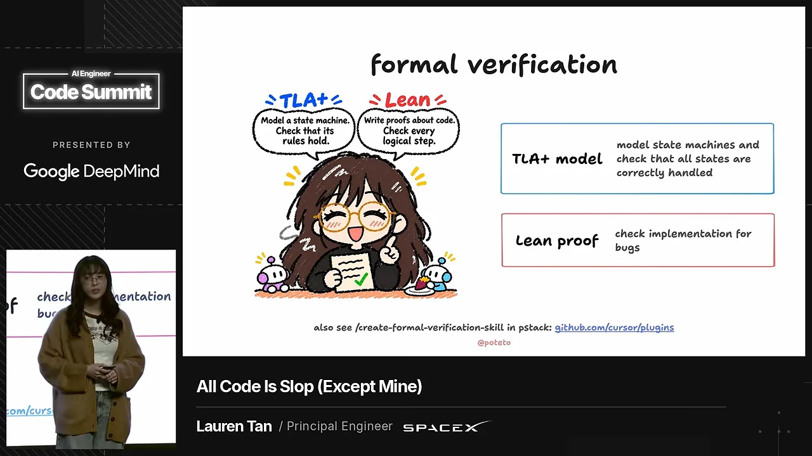
막 시작한 것으로 UI(User Interface)용 속성 기반 테스트도 있어요. Bombadil이라는 라이브러리를 써요. 아래 화면은 Grok Bot 채팅 창에 깨진 문자열 메시지가 빠르게 쌓이는 장면이에요. 테스트가 무작위 입력으로 앱을 두드리는 모습이고, 이 방법으로도 UI 버그를 몇 개 잡았어요.
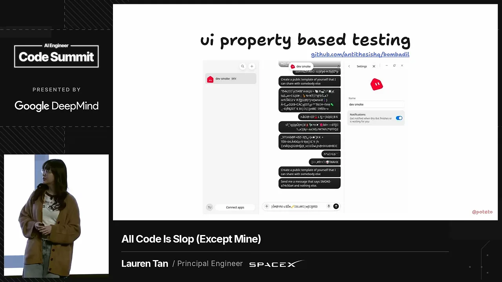
토큰은 대부분 검증에 써요
발표자는 Cindy Sridharan의 트윗 두 개를 나란히 보여 줘요. 5월 15일에는 미묘한 버그가 든 AI(Artificial Intelligence) PR 여러 개가 머지돼 며칠 동안 손으로 검증하고 고쳐야 했다며 에이전트를 못 믿겠다고 했어요. 11월 5일 트윗에서는 그때 빠진 게 지금 쓰는 검증 과정이었다고 해요. 노란 형광펜 부분을 보면 일일 토큰의 70%를 패치 검증에, 20~30%만 패치 생성에 써요.
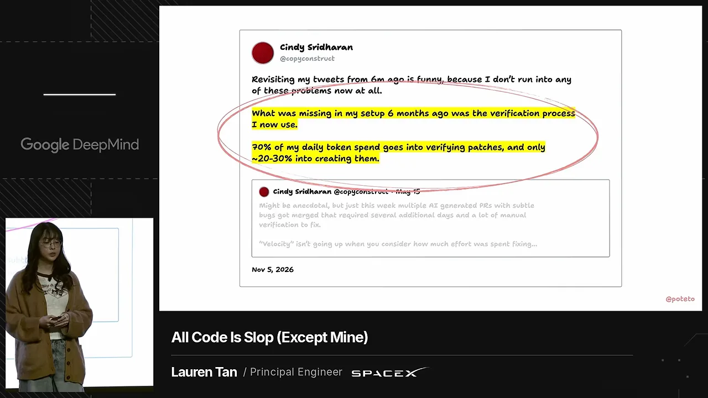
Cindy가 쓰는 기법 목록을 보면 새로운 건 없어요. 배포 전 단계(단위·통합·퍼즈·속성 기반 테스트, 형식 검증, 정적 분석 등)부터 배포, 릴리스, 릴리스 이후(카나리, 모니터링, 트레이싱 등)까지 원래 있던 좋은 엔지니어링 도구예요. 다만 이해하고 쓰고 유지하는 비용이 너무 커서 못 쓰던 것들이에요. 에이전트가 그 비용을 크게 낮췄어요. 그래서 발표자는 지금을 '테스트와 검증의 황금기'라고 불러요.
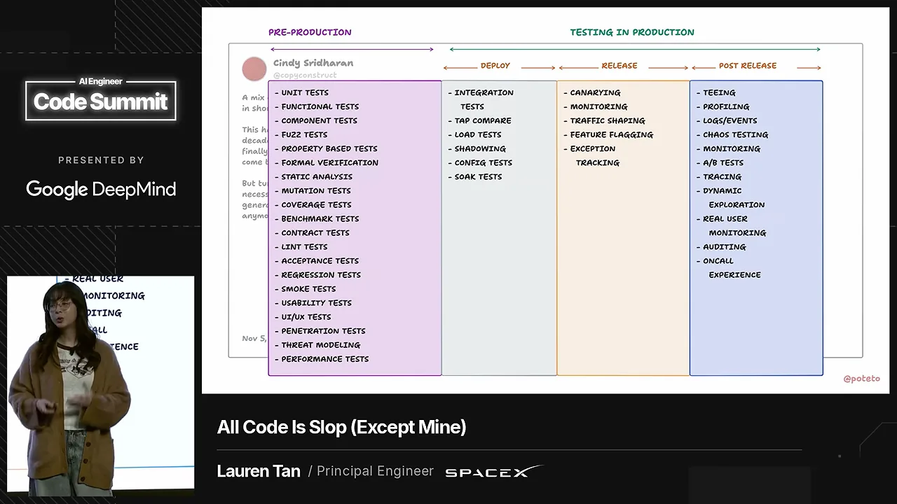
형식 검증은 제품이 어떻게 동작해야 하는지, 에이전트가 의도와 목표를 정말 이해했는지 따지는 데도 도움이 돼요. 발표자는 자기 플러그인 pstack에 /statechart 스킬을 만들었어요. 사용자 관점의 상태 기계를 그림으로 보여 주는 스킬이고, 에이전트가 붙여 준 영상, 스크린샷과 함께 보면 리뷰가 훨씬 쉽대요.
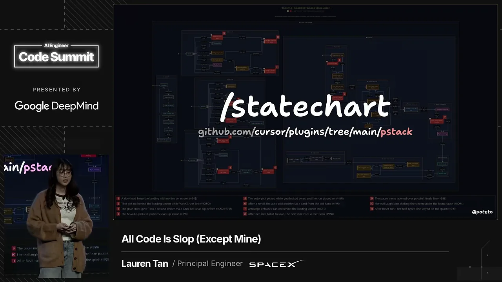
한 달 PR 1만 1천 개, 되돌림 0.5%
이 모든 투자의 대가는 숫자로 나와요. Grok Bot 팀은 10월에 PR 10,926개를 머지했어요. 6월 809개, 7월 1,784개, 8월 4,203개, 9월 5,648개에 이어 한 달 만에 거의 두 배가 됐어요. 슬라이드 왼쪽 위의 누적은 23,370개예요.
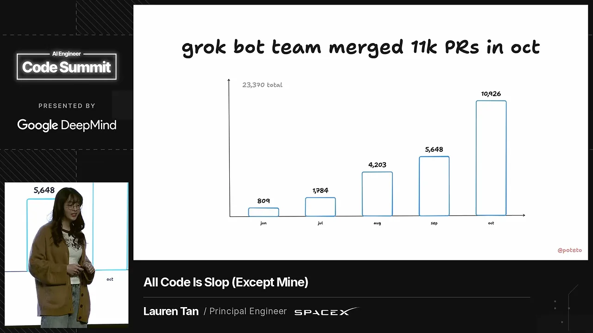
클라이언트 출시 속도도 빨라졌어요. 발표자는 하루에 한 번쯤 안정 버전을 낸다고 해요. 슬라이드에는 데스크톱 앱 출시 횟수가 8월(출시 이후) 7번, 9월 19번, 10월 15번으로 적혀 있어요. 아래 줄의 릴리스 간격 중앙값은 44시간에서 25시간, 28시간으로 줄었어요.
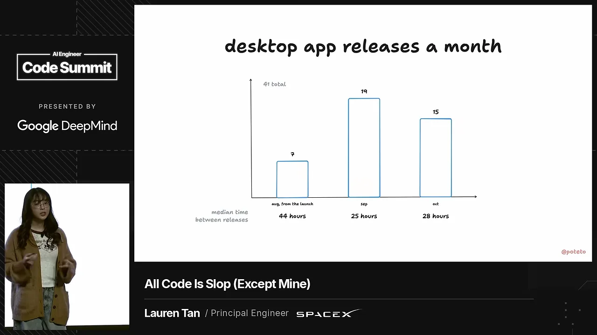
핵심 팀만 더 많이 내는 게 아니에요. 맥락이 많지 않은 가벼운 기여자, 지나가다 PR 하나 내는 사람도 늘었어요. 아래 누적 막대에서 10월 꼭대기 숫자 227이 10월에 PR을 하나 이상 낸 사람 수예요. 범례로 보면 PR 1,000개 이상 1명과 100~999개 22명이 핵심 팀, 10~99개 77명이 가벼운 기여자, 2~9개 78명과 1개 49명이 지나가는 기여자예요.
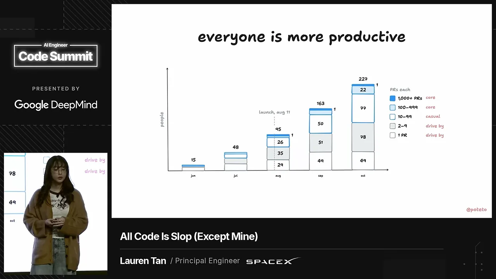
그래도 슬롭은 늘지 않았어요
이만큼 빨라지면 혼란과 슬롭 천지가 될 것 같죠. 그런데 되돌린 커밋 비율은 오히려 낮아졌어요. 6월 0.98%, 7월 0.61%에서 8월 0.47%, 9월 0.48%, 10월 0.47%로 내려와 0.5% 안팎에서 안정됐어요.
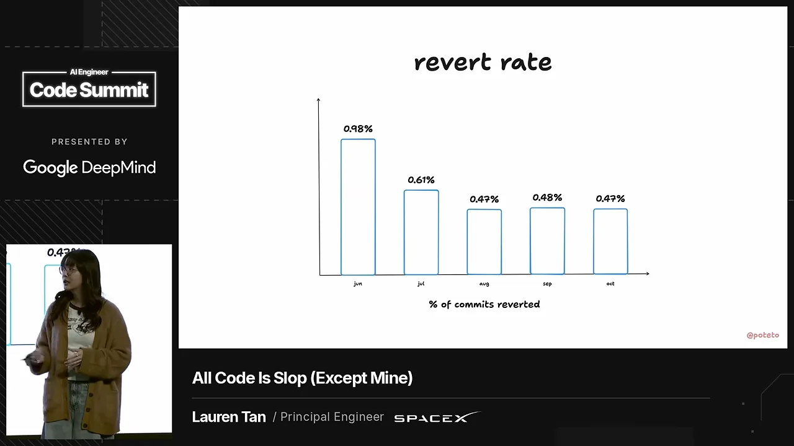
발표자가 가장 흥미롭다고 꼽는 건 성능이에요. 이 속도와 기여자 수에서도 출시 때보다 여러 면에서 좋아졌어요. 시작, 입력, 새 채팅 열기, 채팅 전환이 모두 빨라졌대요. 슬라이드는 5월(may)과 지금(now)을 비교해요. 초록 숫자는 좋아진 항목, 빨간 숫자는 나빠진 항목이에요.
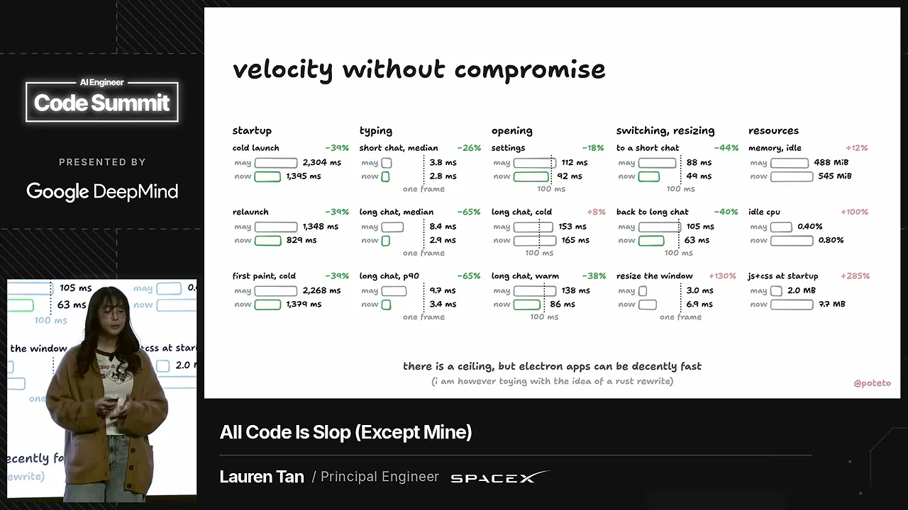
슬라이드 글씨가 작아서 주요 항목을 옮겨 적었어요. 오른쪽 자원(resources) 열은 모두 늘었다는 점도 같이 봐 두면 좋아요.
| 항목 | 5월 | 지금 | 변화 |
|---|---|---|---|
| 콜드 실행 | 2,304ms | 1,395ms | -39% |
| 재실행 | 1,348ms | 829ms | -39% |
| 입력 지연 (긴 채팅, 중앙값) | 8.4ms | 2.9ms | -65% |
| 설정 열기 | 112ms | 92ms | -18% |
| 짧은 채팅으로 전환 | 88ms | 49ms | -44% |
| 긴 채팅으로 돌아가기 | 105ms | 63ms | -40% |
| 긴 채팅 열기 (콜드) | 153ms | 165ms | +8% |
| 창 크기 조절 | 3.0ms | 6.9ms | +130% |
| 유휴 메모리 | 488MiB | 545MiB | +12% |
| 유휴 CPU(Central Processing Unit) | 0.40% | 0.80% | +100% |
| 시작 시 JS(JavaScript)+CSS(Cascading Style Sheets) | 2.0MB | 7.7MB | +285% |
Grok Bot은 아직 Electron 앱이라 성능에 천장이 있어요. 그래도 다른 많은 에이전트 UI보다 이미 훨씬 빠르고, 이 속도와 이 많은 기여자를 생각하면 꽤 괜찮다는 게 발표자의 평가예요.
소프트웨어 공장보다 기초가 먼저
마지막 질문은 '소프트웨어 공장을 지어야 할까?'예요. 슬라이드 각주는 공장을 '코드 작성, 출시, 배포의 자동화'라고 풀어 둬요.
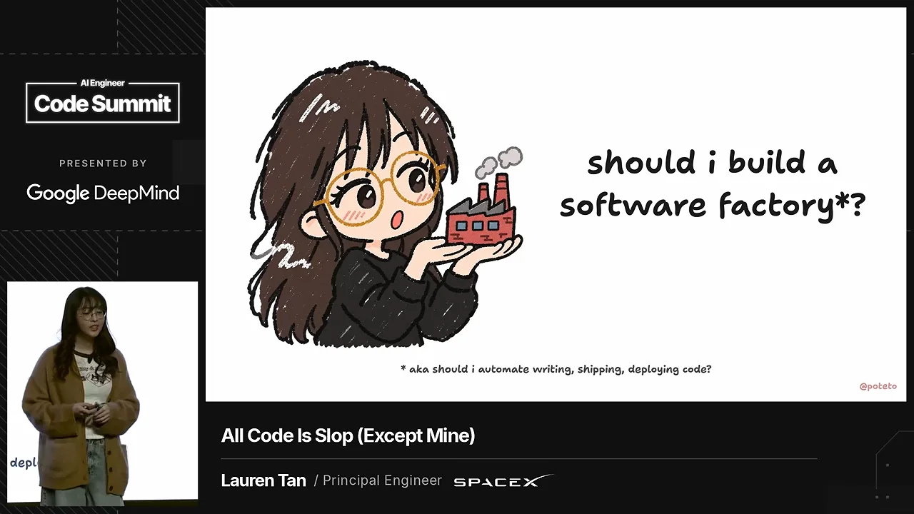
공장을 짓기 전에, 에이전트를 고칠 때마다 코드베이스부터 개선하라고 해요. 먼저 린트 규칙으로 안티패턴이 새로 생기지 않게 막고, 옛 패턴도 정리해요. 그다음 검증 체계를 탄탄히 해요. 이 작업은 어차피 자동화의 전제 조건이에요. 내부 루프가 슬롭을 만들면 그 루프를 자동화해 봤자 슬롭만 더 늘어요. 그러면 토큰을 계속 더 쏟아부어야 하고, 그건 비싸요.
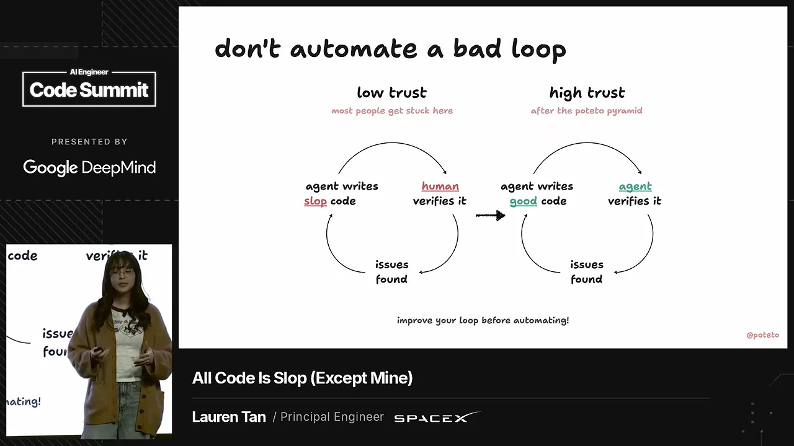
코드베이스, 정적 분석, 런타임·형식 검증에 투자해 두면 그 위에 공장을 쉽게 올릴 수 있어요. 발표자는 바깥 루프로 Grok Bot을 소개해요. 아래 슬라이드 왼쪽 목록(X 피드백, Linear 티켓 생성, 새 Slack 메시지, cron 일정, Datadog·Sentry 알림)이 바깥 루프의 방아쇠예요. 그 신호를 팀 전체가 쓰는 공용 Team Bot이 받아서, 가운데의 내부 루프(좋은 코드 작성 → 에이전트 검증 → 이슈 발견)를 돌려요.
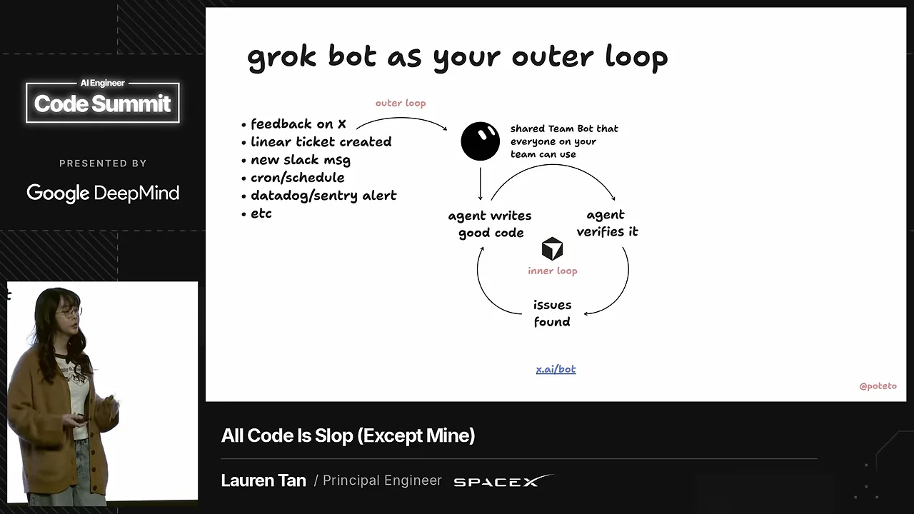
예시도 하나 들어요. 새 릴리스를 자르면 Grok Bot이 Cursor 프로젝트를 자동으로 띄워요. 그 프로젝트가 앱 빌드 전체를 실제 사용자처럼 써 보며 퍼징하고, 찾은 버그마다 수정 PR을 열어 자동으로 머지해요. 아래 스레드는 그 보고예요. 안정판 Linux x64 빌드를 퍼징해 이전 버전 0.79.4와 비교했어요. 중복을 합치니 버그가 50개였고, 이 중 새 버그는 3개(높음 0, 중간 2, 낮음 1), 원래 있던 버그는 47개였어요.
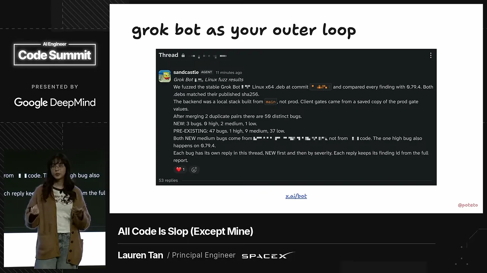
발표자의 결론은 제목과 이어져요. 탄탄한 기초와 좋은 유기적 아키텍처가 있으면 슬롭을 금으로 바꿀 수 있고, 품질을 포기하지 않고도 빠르게 내보낼 수 있어요.
If your inner coding loop produces slop, then automating that loop just produces more slop.
내부 코딩 루프가 슬롭을 만들면, 그 루프를 자동화해도 슬롭만 더 늘어요.
— 영상 15:22